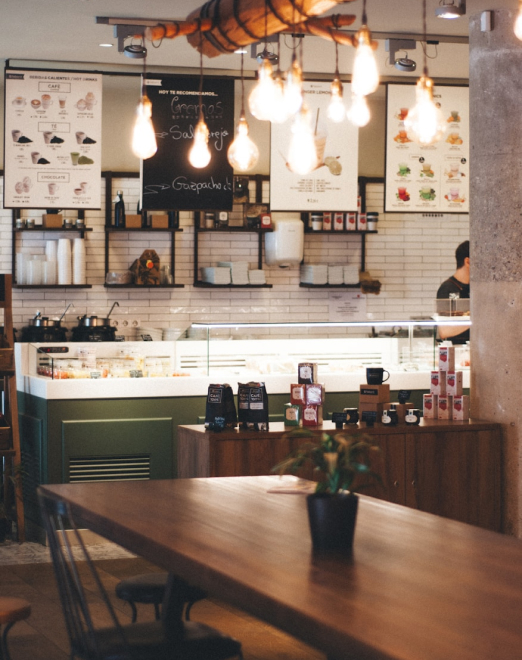
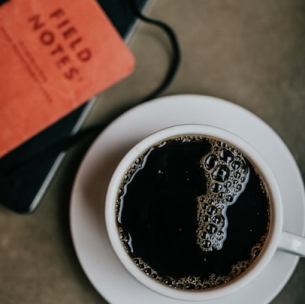
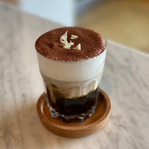
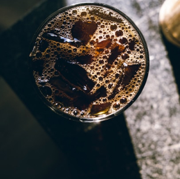

따뜻한 커피 한 잔에 담긴 작은 여유.
한 모금씩 마실 때마다 마음 깊이 스며드는 휴식.
그 온기와 함께 오늘의 일상을 채워가세요.
뭉치카페는 하루의 피로를 녹이는 아늑한 공간을 제공합니다.
정성 가득한 핸드드립 커피와 개성 넘치는 시그니처 메뉴로 특별함을 더했습니다.
지역 로스터리에서 직접 공수한 신선한 원두로 커피 본연의 풍미를 느낄 수 있습니다.
소소한 여유와 따스함이 함께하는 뭉치카페에서 당신만의 시간을 만들어보세요.

시그니처 커피&음료

뭉치 시그니처 아메리카노
(Mungchi Signature Americano)
뭉치카페만의 특별한 블렌딩으로, 산뜻하면서도 깊은 맛을 느낄 수 있는 시그니처 아메리카노입니다. 아침을 활기차게 시작하고 싶은 분들에게 적합하며, 하루의 피로를 깨워주는 깔끔한 마무리가 특징입니다. 커피 본연의 맛을 최대한 살려 산미와 쌉쌀함이 조화롭게 어우러집니다.
하루의 시작을 가볍고 깔끔하게 열고 싶은 분들에게 추천드립니다.
클래식 카페라떼
(Classic Café Latte)
신선한 에스프레소와 부드러운 우유의 황금 비율로 탄생한 뭉치카페의 클래식 카페라떼입니다. 고소한 우유의 풍미와 진한 커피가 어우러져 한 모금만으로도 풍부한 맛을 즐길 수 있습니다. 커피의 쓴맛이 부담스러울 때, 고소하고 크리미한 라떼를 즐겨보세요.
진한 커피와 고소한 우유의 부드러움을 동시에 즐길 수 있어, 누구나 부담 없이 즐길 수 있는 메뉴입니다.

허니 아인슈페너
(Honey Einspänner)
달콤한 허니 크림이 에스프레소 위에 풍성하게 얹어진 부드럽고 고소한 커피입니다. 한 모금 마실 때마다 느껴지는 크림의 달콤함과 에스프레소의 진한 향이 완벽하게 조화를 이룹니다. 입 안 가득히 퍼지는 꿀의 은은한 풍미가, 커피의 쌉싸름함을 한층 더 감미롭게 만들어줍니다.
크림의 부드러운 달콤함과 진한 에스프레소의 조화가 입 안에 감미롭게 퍼집니다.

바닐라 콜드브루
(Vanilla Cold Brew)
바닐라 시럽이 어우러진 콜드브루 커피로, 부드럽고 달콤하게 즐길 수 있는 메뉴입니다. 향긋한 바닐라의 풍미와 시원한 콜드브루의 청량함이 잘 어우러져, 특히 더운 날 시원하게 마시기에 좋습니다. 산뜻하면서도 부담 없는 맛으로 남녀노소 누구나 편안하게 즐길 수 있습니다.
더운 날에도 청량하게 즐길 수 있으며, 바닐라의 풍미가 어우러져 부담 없이 마시기 좋습니다.
허니 아인슈페너
(Honey Einspänner)
달콤한 허니 크림이 에스프레소 위에 풍성하게 얹어진 부드럽고 고소한 커피입니다. 한 모금 마실 때마다 느껴지는 크림의 달콤함과 에스프레소의 진한 향이 완벽하게 조화를 이룹니다. 입 안 가득히 퍼지는 꿀의 은은한 풍미가, 커피의 쌉싸름함을 한층 더 감미롭게 만들어줍니다.
크림의 부드러운 달콤함과 진한 에스프레소의 조화가 입 안에 감미롭게 퍼집니다.
바닐라 콜드브루
(Vanilla Cold Brew)
바닐라 시럽이 어우러진 콜드브루 커피로, 부드럽고 달콤하게 즐길 수 있는 메뉴입니다. 향긋한 바닐라의 풍미와 시원한 콜드브루의 청량함이 잘 어우러져, 특히 더운 날 시원하게 마시기에 좋습니다. 산뜻하면서도 부담 없는 맛으로 남녀노소 누구나 편안하게 즐길 수 있습니다.
더운 날에도 청량하게 즐길 수 있으며, 바닐라의 풍미가 어우러져 부담 없이 마시기 좋습니다.